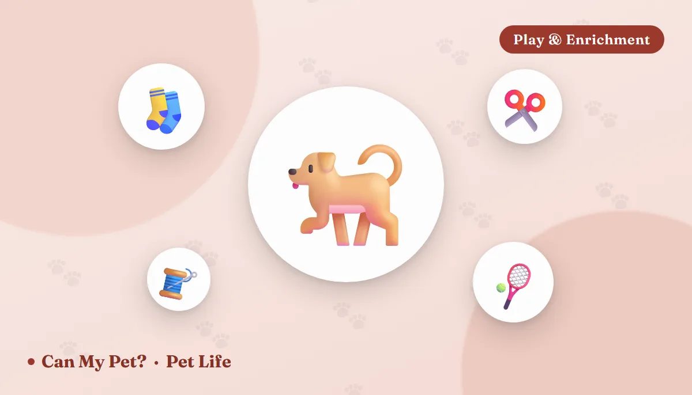

12 DIY Dog Toys You Can Make at Home Tonight (Safety-Checked Against Vet Guidance)

Dog toys wear out fast — sometimes in one enthusiastic afternoon — and a drawer full of old T-shirts, socks and cardboard is usually all it takes to replace them. Homemade toys aren't just cheaper than a store run; several (tug ropes, snuffle mats, treat puzzles) are things vets and trainers actively recommend for the enrichment value alone. The catch: not every household item is safe to hand a dog, so this list pairs each idea with what to watch for, and closes with a straightforward checklist of materials to skip entirely.
12 DIY dog toys that actually work
1. Braided T-shirt tug rope Free / 10 min
Cut 3–4 long strips from an old T-shirt, knot them together at one end, and braid tightly. Knot the other end. It's a durable, washable tug toy that costs nothing and holds up surprisingly well for moderate chewers.
Tip: wet the fabric first — it braids tighter and lasts longer.
2. No-sew fleece tug toy Free / 15 min
Cut two matching strips of fleece, layer them, slice fringe along both long edges, and tie each pair of fringe pieces in a double knot down the length. No sewing required, and fleece is gentler on gums than rope for puppies or older dogs.
3. Sock-and-tennis-ball fetch toy Free / 2 min
Drop a tennis ball into a clean, thick sock and knot the end tightly. It's easier to throw and catch than a bare ball, and the sock adds a satisfying texture for chewers — just retire it once the knot loosens enough that the ball could work free.
4. DIY snuffle mat Free / 20 min
Knot strips of fleece through the holes of a rubber sink mat or a piece of plastic canvas, then scatter kibble or small treats through the fabric "grass." Dogs use their nose to root it out — a genuinely tiring mental workout that's especially good for food-motivated dogs.
5. Muffin-tin treat puzzle Free / 5 min
Drop treats into a few cups of a muffin tin and cover each with a tennis ball. Your dog has to nose or paw the balls off to get the reward — an easy, adjustable-difficulty puzzle that needs zero building.
6. Cardboard box excavation Free / 2 min
Hide treats or a favorite toy inside a box stuffed loosely with crumpled paper (no staples, tape, or plastic wrap left on). Let your dog dig it out under supervision — it's a short-lived toy by design, since the goal is the shredding itself.
7. Toilet-paper-roll treat dispenser Free / 5 min
Fold in the ends of an empty toilet-paper or paper-towel roll with treats tucked inside. Dogs paw and chew it open to get the payoff. Supervised use only — the cardboard itself is generally fine in small amounts, but it shouldn't become a regular chew.
8. PVC pipe treat roller Low cost
A short length of wide PVC pipe (capped or sanded smooth on both ends, with holes drilled along the side) becomes a rolling treat dispenser when filled with kibble. It's a sturdier, more chew-resistant option for dogs who go through soft DIY toys quickly.
9. Frozen stuffed toy Low cost
Fill a silicone cupcake liner or a knotted, clean sock with a little plain yogurt, mashed banana, or dog-safe peanut butter (xylitol-free only) and freeze it. A frozen treat toy takes longer to finish and feels extra good on teething puppies or dogs cooling off after a hot walk.
10. Crinkle water-bottle toy Free — supervised only
An empty plastic water bottle makes a loud, satisfying crinkle sound dogs love to bat and chew. Because bottle caps and cracked plastic edges are a genuine choking and cut risk, remove the cap and label first, and slide the bottle inside a sock so loose plastic can't be swallowed. Never leave it out unsupervised.
11. Flirt pole Low cost / 10 min
Tie a rope or fleece strip to the end of a broom handle or dowel, with a toy knotted on the far end. Dragging it in unpredictable patterns turns a short backyard session into real cardio — a great option for high-energy breeds on a rainy-day walk cutback. Keep sessions short and let your dog "win" the toy periodically so the game stays satisfying, not frustrating.
12. Ice cube treats Free / 5 min
Freeze low-sodium broth or small pieces of dog-safe fruit (like banana) into ice cubes. It's less a "toy" than a hot-day enrichment snack, but it keeps a dog occupied and hydrated at the same time. Offer outside or on an easy-clean floor.
Match the toy to your dog's chew style
The same braided rope can be a perfect tug toy for one dog and a shredded hazard for another. Before you pick a project, size up how your dog actually plays. Veterinary behavior resources generally sort dogs into a few rough groups, and each one does best with a different kind of DIY toy.
| Your dog is… | Best DIY picks | Watch for |
|---|---|---|
| A gentle mouther (retrievers, many seniors) | Sock-and-ball, fleece tug, snuffle mat, crinkle bottle in a sock | Slow wear — still check seams weekly |
| A shredder (terriers, many herding mixes) | Muffin-tin puzzle, cardboard excavation, toilet-paper-roll dispenser — toys meant to be destroyed | Swallowed scraps; supervise every session |
| A power chewer (bully breeds, large mastiff types) | Tight T-shirt braid for short tug sessions, PVC roller, frozen stuffed toy | Fabric that comes apart in minutes — never leave it out |
| A teething puppy | Frozen stuffed sock, fleece tug, ice cube treats | Anything hard enough to chip baby teeth |
| A high-energy athlete | Flirt pole, fetch sock, snuffle mat after exercise | Overdoing it on hard surfaces — see our exercise guide |
Not sure which group your dog falls in? Watch a five-minute play session with a cheap toy. Dogs that mostly carry and toss are gentle mouthers; dogs that immediately start pulling the toy apart are shredders, and they need the “built to be destroyed” category.
Safe stuffing: what to put inside frozen and puzzle toys
Several of these toys (numbers 5, 7, 9 and 12) work because of what you hide in them, so it's worth knowing which fillings are safe and which are dangerous. Plain, low-fat and unsweetened is the rule of thumb.
- Generally safe in small amounts: plain cooked chicken, plain pumpkin (not pie filling), mashed banana, blueberries, shredded carrot, plain unsweetened yogurt, and your dog's regular kibble soaked in water or low-sodium broth.
- Check the label first: peanut butter is a favorite, but some brands are sweetened with xylitol, which is highly toxic to dogs. Use our xylitol calculator if your dog ever gets into a sugar-free product.
- Never use: anything containing grapes or raisins, onion or garlic (including onion-based broths and baby food), chocolate, macadamia nuts, or alcohol-based extracts. Our full list of foods toxic to dogs has the detail.
Bonus: 3 cozy fall ideas
Crisp weather makes indoor enrichment more useful, since shorter days and rainy walks are exactly when dogs get restless. These three fit the season:
13. Pumpkin-yogurt freezer cups Low cost
Stir a spoonful of plain canned pumpkin into plain yogurt, spoon it into silicone cupcake liners, and freeze. Plain pumpkin is one of the gentlest fall fillings for dogs; skip pumpkin pie mix, which contains added sugar and spices.
14. “Find it” scent trail Free / 5 min
Hide a few kibble pieces around one room — behind a chair leg, on a low shelf, inside a paper bag with the top folded over — then release your dog to sniff them out. It costs nothing, needs no building, and pairs well with the science in our dog sense of smell guide.
15. Towel-roll treat burrito Free / 3 min
Lay a few treats on a clean, thick towel, roll it up loosely, and tie it in a single soft knot. Your dog unrolls or untangles it to reach the reward. Use only towels with no loose loops or threads, and take it away once it starts to shred.
How to introduce, rotate and retire DIY toys
A toy is only as safe as your routine around it. A simple system makes homemade toys work better and keeps the risks low:
- Supervised trial. The first two or three sessions, stay in the room and watch what your dog does with it. If they start ripping off pieces, that toy is for tug-only or trash.
- Rotate. Keep four or five toys out and store the rest. Swapping them weekly keeps old toys feeling new, which trainers often use to keep dogs from getting bored with the same objects.
- Inspect. Once a week, run a hand over every toy. Look for frayed knots, thin patches, cracked plastic, loose threads and anything a dog could pull free.
- Wash. Fabric toys go in a hot wash with unscented, dye-free detergent; hard-plastic and PVC toys can be washed with soap and water and dried fully.
- Retire early. A homemade toy costs almost nothing to replace. If you're wondering whether it's still safe, it isn't.
If your dog swallows part of a toy
Even careful owners have close calls. If your dog swallows fabric, string, a bottle cap or another piece, don't wait for symptoms to decide whether it matters. Call your vet or an emergency clinic and describe what and how much was swallowed. Signs that a blockage may already be developing include repeated vomiting, loss of appetite, lethargy, a tense or painful belly, straining to poop, or diarrhea that doesn't clear up. If your dog is gagging, pawing at their mouth or struggling to breathe, that's a choking emergency — our choking & CPR guide covers the basic steps while you head to a vet. Never induce vomiting at home without a vet's direction, especially after a sharp or stringy object.
What to avoid: a quick safety checklist
Most DIY-toy injuries trace back to a handful of repeat-offender materials. Skip these when building anything for your dog:
- String, yarn, ribbon or ties left loose — a swallowed linear object can cause a serious intestinal blockage and often needs emergency surgery.
- Rubber bands and hair ties — easy to miss on the floor, easy for a dog to swallow whole.
- Small hard parts — buttons, bells, bottle caps, plastic eyes from stuffed animals.
- Brittle or thin plastic — cracks into sharp shards rather than tearing.
- Corn cobs, cooked bones and sticks — often suggested as “free toys,” but they splinter or lodge in the gut and are among the most common causes of surgical blockages.
- Tennis balls used as chew toys — fine for supervised fetch, but the abrasive felt wears teeth over time and a crushed ball can become a choking hazard for large dogs.
- Anything recently exposed to cleaning chemicals — rinse and fully dry containers before repurposing them.
When in doubt, size the toy to the dog: anything small enough to disappear into the back of the mouth in one bite is a choking risk, regardless of the material.
Frequently asked questions
Are homemade dog toys actually safe?
Many are, as long as you avoid loose string, small hard parts, and brittle plastic, and supervise the first few uses. Retire any DIY toy as soon as it starts to fray or break apart.
My dog destroys every soft toy in minutes — what should I make instead?
Lean toward the sturdier options here, like the PVC treat roller or a tightly braided T-shirt rope, and always supervise strong chewers. For a dog who shreds everything, a puzzle feeder (like the muffin-tin idea) that rewards gentler handling can help more than a tougher toy alone.
Can I use old clothes with buttons or zippers?
Remove buttons, zippers, snaps and any plastic trim first — those are exactly the small hard parts most likely to be swallowed.
How often should I replace a DIY toy?
As soon as it shows fraying, cracks, loose threads, or missing pieces. There's no fixed schedule — check toys the way you'd check any chew item, every few days for heavy users.
Can puppies play with DIY toys?
Yes, with extra supervision. Choose soft, gum-friendly options like a fleece tug or a frozen stuffed sock, keep them small enough for the puppy's mouth but too big to swallow, and skip anything hard enough to chip baby teeth.
Are DIY toys enough, or does my dog still need store-bought ones?
Both work. Homemade toys are great for enrichment and quick replacements, while some store-bought chew toys are tested for strength. Whichever you choose, the same rules apply: size it to the dog, supervise, and retire it when worn.
How long can I leave a DIY toy with my dog unsupervised?
For most homemade toys, the safe answer is not at all until you know how your dog treats them. Toys made of fabric, cardboard or plastic are best used during supervised play. Durable, vet-recommended chews are a better choice for alone time.
Is it okay to freeze a stuffed toy?
Yes, and it's one of the most popular options. Use dog-safe fillings like plain yogurt, pumpkin or banana, and skip anything with xylitol, grapes, raisins, onion or chocolate. Offer it on an easy-clean floor and count it toward your dog's daily treat calories.
By the CanMyPet Editorial Team · Reviewed against ASPCA and veterinary enrichment guidance · Published August 2026 · Updated September 30, 2026.
Sources: ASPCA Animal Poison Control, American Kennel Club training & enrichment guidance, Merck Veterinary Manual (foreign-body and GI obstruction), and FDA guidance on xylitol.